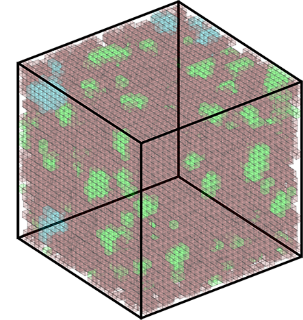
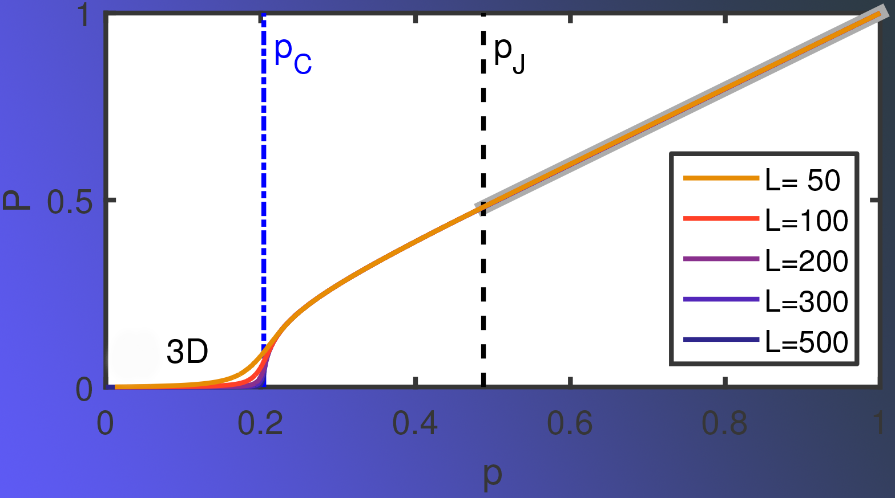

Glassy behavior is observed not only in 'chemical' glasses, but also in granular materials and colloidal suspensions. These systems are characterized by having a glass transition temperature. That is, a temperature in which a mixed order out of equilibrium phase transition occurs and the relaxation times of the system diverge.
This critical slowing down in dynamics is one among many reasons as to why studying glassy behavior is challenging both experimentally and theoretically. Kinetically constrained models have been successful in this as they are simple enough to easily simulate large systems and are sometimes analytically solvable.
We have studied a three dimensional extension of the 2D Spiral Model. The 2D model undergoes jamming at a critical density in which a fraction of the particles in the system cannot move anymore and form 1D clusters of frozen sites. The particles that can still move become rattlers - they are confined to some local area of the system and cannot diffuse far away.
In 3D however, that is not the case; a fraction of the particles in the system become frozen and creates a 1D frozen cluster, however mobile particles can diffuse over long distances. The reason is geometric - in 2D one-dimensional frozen clusters of particles act as effective walls, and particles are unable to cross these walls and travel to the other side. In 3D particles use the third dimension to travel around these clusters. We investigated the existence of a second critical density, one in which frozen clusters become 2D and particles become confined in local cages in the system.

Using a fast and efficient culling algorithm, we bypass running the dynamics of the system and find the underlying structural property of the system determining the diffusivity of particles.
We indeed find a second critical density. Its critical exponents value agree with those of random percolation.
Full Text
<- Back